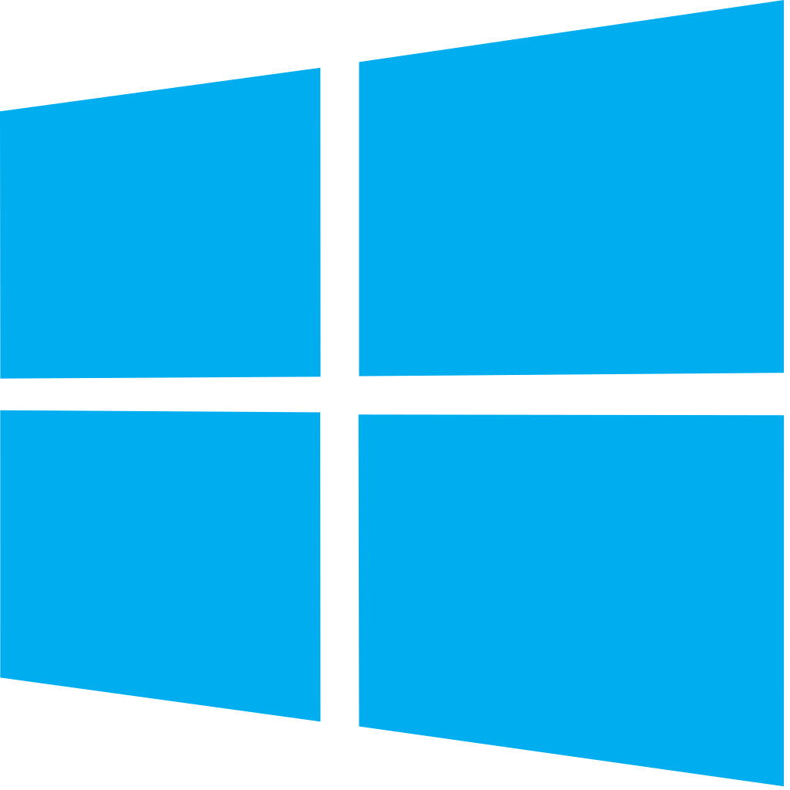
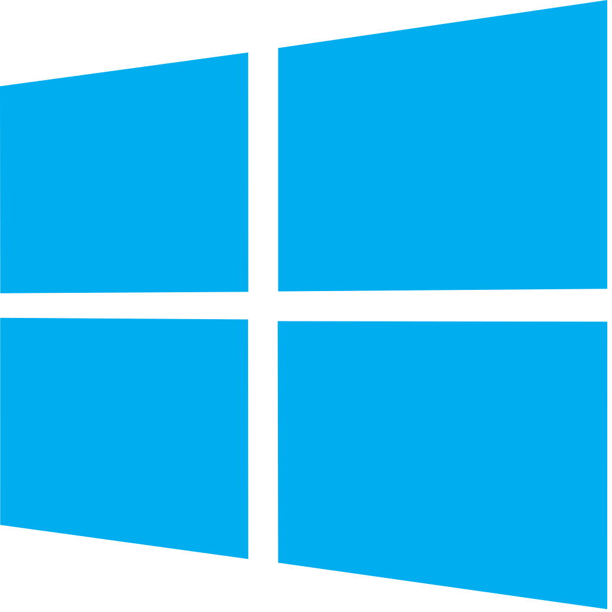
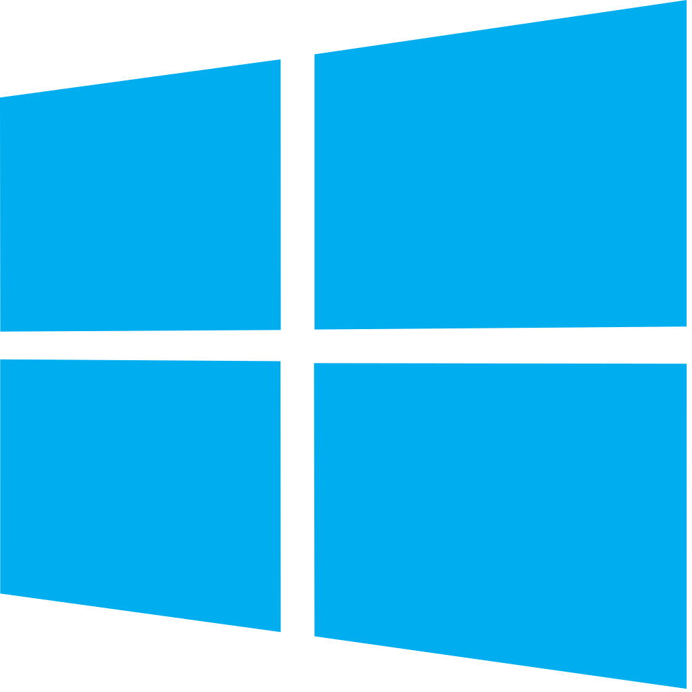

Ce projet consiste à développer un programme permettant de lancer un serveur web en local sur des machines virtuelles. Le programme est développé dans le langage C# en mode console. C’est-à-dire que les messages à transmettre au serveur seront envoyés en ligne de commande depuis la console. Les 3 machines virtuelles sont différentes, tout d’abord il y’a la machine virtuelle qui nous sert de serveur. Elle est installée avec un Windows Serveur 2019. Ensuite les deux machines clients, une est installée avec un Windows 10 et la deuxième avec un Debian 10.9 (Linux).
